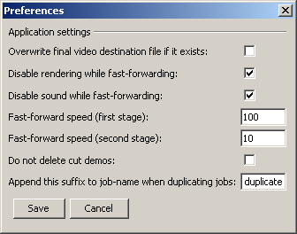

The preferences dialog allows you to change the behavior of the program in certain situaitons.

Overwrite final video destination file if it exists: This checkbox allows you to determine whether the final destination video file (e.g. C:\render\fragOfTheMonth.avi) should be overwritten by a job if that file already existed from your harddrive. By default this option is disabled. The program will, in this case, not overwrite any existing files, but save the video file with a “copyX” suffix, for example C:\render\fragOfTheMonth_copy1.avi
Disable rendering while fast-forwarding: As the Nexuiz demo recorder creates a cutted demo that has slowmo-commands in it to fast-forward it to the desired start time, the fast-forwarding process is often slowed down due to the action taking place on your screen (and your graphic card choking with the mere speed of the demo, e.g. during a “slowmo 100” period). However, there is a variable called r_render in the engine which can be set to 0, which will disable any render updates. This will speed up the fast-forwarding process massively. Of course, r_render is being set to 1 a few seconds before start time is reached.
Disable sound while fast-forwarding: The value of the variable volume is saved and the set to 0 right after the demo was loaded. The reason is that it can be annoying to hear the in-game sounds while fast-forwarding.
Fast-forward speed (first stage or second stage): The demo is fast-forwarded using two different fast-forward speeds. In the first stage, when the start time is still about a minute away, the “first stage” value is used. Then, until 5 seconds before the start time, the “second stage” value is used. You will only need to manipulate these values if you discover that the final recorded video is inaccurate when it comes to the time when the recording starts (e.g. when then video recording starts too late, reduce these 2 values for first and second stage a bit – you will have to experiment)
Do not delete cut demos: The file name of the automatically created cut demo is like the original name of your demo, but ends with “_autocut.dem”. Normally this demo is created, being recorded from, and then deleted again. If you enable this option the demo file is not deleted, and you can inspect it with a Hex editor or whatever else you want to do with it (maybe send it to a friend to have him record it?)
Append this suffix to job-name when duplicating jobs: As you now have customizable job names it would probably be a bad idea to give duplicated jobs the same name as the original jobs. This is why you can set up a suffix that will be appended to the original job name.